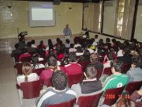
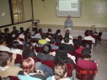
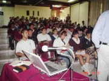
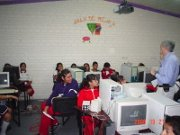
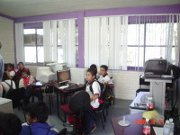
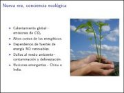

Movimiento Libre
Colección de ideas.
Publicaciones escritas por guivaloz
Conferencia "Software Libre" en el 35 Aniversario del CBTiS 4
2008-10-28 23:00 - guivaloz
  
El 28 de octubre del presente, tuve el honor de participar en los eventos que con motivo del XXXVII Aniversario del Centro de Bachillerato Tecnológico Industrial y de Servicios No. 4 (CBTiS 4) con la ponencia Software Libre.
Audio y Video en GNU/Linux
2008-10-26 20:45 - guivaloz


Con motivo del VI Simposium Nacional de Sistemas Computacionales e Informática (SINASCI) organizado por el Instituto Tecnológico Superior de Lerdo elaboré esta sencilla presentación para mostrar las cualidades de los programas multimedia LAME, Audacity, FFMPEG, MPlayer, Xine y VLC. Todos son Software Libre.
Descargar
Conferencia "Software Libre" en la XV Semana de Ciencia y Tecnología
2008-10-26 08:30 - guivaloz
 
El pasado 21 de octubre de 2008, impartí la plática Introducción al Software Libre ante alumnos de 5to. y 6to. de primaria. Los niños de esta generación muestran un mayor uso de las herramientas informáticas que las generaciones pasadas; sin embargo, para ellos fue la primera vez que escucharon hablar sobre Linux y Software Libre.
Consejos para una Informática Ecológica
2008-05-17 15:30 - guivaloz
 

Ante una nueva era donde hay más conciencia por la conservación del medio ambiente nos vemos en la necesidad de buscar mejores alternativas, más eficientes energéticamente hablando, de nuestros equipos informáticos. Las nuevas tecnologías del Kernel Linux, los fabricantes de equipos de cómputo y los usuarios debemos de hacer esfuerzos por lograr disminuir el consumo de energía en pro de nuestro mundo.
Descargar
Renovar la licencia de automovilista en Lerdo, Durango
2008-02-18 10:20 - guivaloz
El mes pasado dediqué una mañana a cumplir con las obligaciones ciudadanas de pagar predial, tenencia y refrendos. Aproveché la vuelta para que mi esposa renovara su licencia de manejo, sin saber la cantidad de trámites y traslados que debía hacer.
En este mes llegó mi turno, tenía que renovar mi licencia de manejo y pasar por los mismos trámites que había tenido mi esposa. Decidí documentar minuciosamente todo el proceso. Lo que a continuación expongo es un ejemplo de la desconsideración que tienen algunas autoridades con el tiempo y recursos de nosotros los ciudadanos.